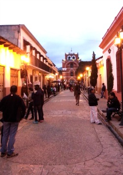
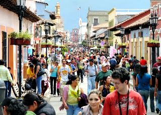
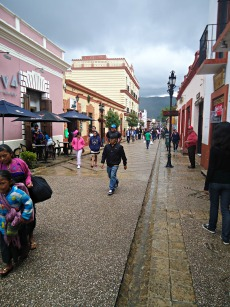
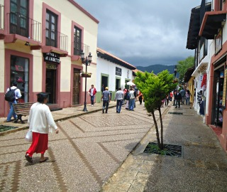
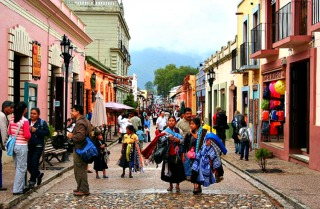

Obra que pretende conjuntar la Arquitectura de la época virreinal de San Cristóbal de Las Casas con la modernidad del siglo XXI, integrando una armonía visual, creando una amplia avenida peatonal para disfrutar de un paseo que comienza en el Arco del Carmen y termina en la Iglesia de Santo Domingo, este andador nos obliga a transportarnos por la antigua Ciudad del Valle de Jovel y disfrutar de su clima inmejorable y de la convivencia de la diversidad de etnias que a través de los siglos se ha venido fortaleciendo, además de apreciar la riqueza de sus Monumentos Históricos.
Es uno de los principales Andadores Turísticos de la Ciudad en el cual se ubican los monumentos principales de la Ciudad como el Arco del Carmen, Casa de Artesanías, Escuela de Derecho, Palacio Municipal, Catedral, Parque Central, Teatro Zebadúa, Iglesia de la Virgen de Caridad, Ex convento de Santo Domingo
Se encuentra ubicado en la Avenida Miguel Hidalgo...
Si usted se encuentrado en la plaza de la paz viendo de frente hacia la catedral puede caminar hacia su derecha pasando por la plaza 31 de Marzo como referencia encontrará el Banco Santander y Frente a este la Farmacia Similar entre estos dos lugares encontrará el andador eclesiástico que termina frente al Arco del Carmen.
Si usted se encuentrado en la plaza de la paz viendo de frente hacia la catedral puede caminar hacia su izquierda pasando como referencia encontrará la Zapateria Catedral y Frente a este el Restaurant VIA VAI entre estos dos lugares encontrará el andador eclesiástico que termina al llegar a la plazuela de Santo Domingo.
En el lugar usted puede practicar actividades de esparcimiento como:
* Caminata
* Compra de Artesanias
* Fotografia
* Gastronomía
* Visitar Museos y Centros Culturales
* Asisitencia a Teatros





posicione el mouse sobre las imágenes